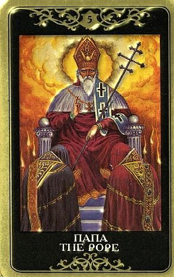

Вот и ключевые слова этой карты – правила и смысл.
Жрец — образ святого, символ понимания, доверия, добродетели, призвания, осмысленности труда.
Это — символ доверия друг к друга, союза, брака.
Жрец — авторитетная персона, законник в хорошем положении, в плохом — образ черного учителя, манипулятора.
Пятый Аркан связан с верой в осмысленность происходящего и его цель.
Иерофант учит и воспитывает, а Дьявол потом проверяет, чему мы научились, предлагая сыграть в обход правил и выявляя наши слабые места в понимании того, как надо и как не надо поступать.
Справедливость в раскладе поднимает вопросы справедливости, Иерофант – вопросы собственно этики.

В практических раскладах Иерофант указывает главным образом на три вещи: вопросы этики, процесс обучения и участие в каких-то ритуалах и церемониях.
Это может быть и заключение официального брака.
Он дает положительный ответ на вопрос о возможности или необходимости учиться или учить, а также о возможности или необходимости оформлять отношения.
Более глубокие значения карты – истинная религиозность, следование за пастырем, наставничество и глубокое знание, поиски смысла и его обретение.
Иерофант нередко выпадает тогда, когда человек пытается объяснить происходящее с ним в терминах какого-то учения, будь то гомеопатия, православие, венский психоанализ, индийская астрология или что угодно другое (спектр неграниченно широк, а само учение может сущестововать как две тысячи лет, так и два месяца).
Иными словами, человек начинает задумываться, толковать и оценивать свой жизненный опыт, усматривая в нем какой-то дополнительный смысл. Часто это действительно вспышка интереса к церкви, обращение к исторически значимым воззрениям и принципам. Иерофант обычно припахивает нафталином, но и добротность в нем ощущается.
В старину Иерофант считался одним из трёх ангелов-хранителей в Таро, обеспечиваюшим благоприятный исход доброму делу и несущим знание, как правильно поступить.
В этом есть смысл, потому что доверие вообще и наше доверие себе служат основой веры в жизнь, в будущее. Иерофант олицетворяет мир веры и доверия, основывающегося на непоколебимости избранных ценностей.
Если Дьявол в раскладе напоминает нам, что у нас есть искушения и слабости, то Иерофант в раскладе напоминает нам, что у нас есть совесть и внутреннее ощущение чистоты и добра в противоположность тому, что мы считаем злом.
Помимо того, эта карта говорит, что претворение планов в жизнь пойдет успешно, если мы будем благоразумно играть по правилам, приспособаливаться к одобренным нормам поведения.
Эта карта говорит о традиционном подходе к решению беспокоящего вопроса, так сказать, «путем истинным». Иерофант апеллирует к социальным ценностям и традициям, и всему, что подходит под эти понятия или с этим связано.
В его ведении находятся всевозможные устои, четкое внутреннее понятие о том, «что такое хорошо, что такое плохо».
Современному человеку обычно не свойственны глубокомыслие и щепетильность в этих вопросах, поэтому Иерофант ставит его в тупик, а толкования обычно не заходят далее того, что это к свадьбе или поступлению в ВУЗ – словом, грядет какой-то освященный традициями официоз.
Карта действительно олицетворяет обучение, стремление к знаниям и социальное согласие.
Иногда появление карты говорит о советчике, о ком-то, с кем есть смысл поговорить на волнующую тему.
Чаще – о том, что на пути вопрошающего встретятся люди, полагающие, что знают истину (ты либо подчиняешься, либо подвергаешься каре). Это кто-то, кто учит, является мастером в своем деле и оценивает твои достижения.
Иерофант может олицетворять человека, которому мы очень доверяем, с мнением которого считаемся и который принимает искреннее участие в нашей судьбе, помогая и и направляя.
Иерофант несет контакт с наставником, способным открыть выход на более высокий уровень достижений, почитание прошлых заслуг, послушное следование тому, что говорят, а также часто – продолжение каких-то традциий, нежелание отказываться от них, со всеми их ритуалами.
Часто эта карта показывает, что мы либо нуждаемся в поддержке и опеке более опытного и знающего человека, либо сами стремимся передать другим накопленный опыт.
В обыденном значении Иерофант указывает и на наличие в жизни какого-то очень важного союза (возможно, брачного), или на стремление к таковому.
ЛИЧНЫЕ ОТНОШЕНИЯ
Эта карта символизирует наивысшие духовные составляющие отношений и в каком-то смысле всегда ставит вопрос их уровня.
Иерофант связан с общностью и социальными законами, поэтому в его ведении находятся если не любовь, то брачные обеты.
В зависимости от других карт может предвещать свадьбу, прочное супружество, крепкую дружбу. Карта может говорить о том, что партнеров объединяет общая цель, общая вера во что-то, одним словом, нечто большее, чем просто симпатия или страсть.
Иногда Иерофант сообщает, что «правильный» партнер появится в жизни тогда, когда духовное развитие достигнет надлежащего уровня, чтобы ничем не омрачать эту связь.
Иерофант большой традиционалист, ему импонирует респектабельность и сдержанность.
Он может быть очень верным поклонником и крайней добропорядочным кандидатом в спутники жизни.
Любые проблемы в отношениях, и в особенности в браке Иерофант решает исключительно путем добродетели и сдерживания своих порывов.
Партнеру, описываемому картой Иерофант, можно доверять. Не в том смысле, что это гарантия его личной святости, но для него измена – это не неверность партнеру. Это измена собственному духу, собственным понятиям и высоким моральным принципам, а это куда более интимное и болезненное мероприятие, чем небрежный шаг на сторону.
Обычно у Иерофанта высокие идеалы, и он способен создавать отношения, в которых все «честно и благородно». Впрочем, кавычки здесь не к месту. Честно и благородно. Это может быть изрядным испытанием само по себе, если человеческие возможности другого партнера не столь высокой пробы (а поскольку Иерофанты, в общем-то штучный товар и редко ходят стаями, то так оно обычно и оказывается).
В худшем случае Иерофант говорит о том, что людей связывает самое холодное из чувств – чувство долга.